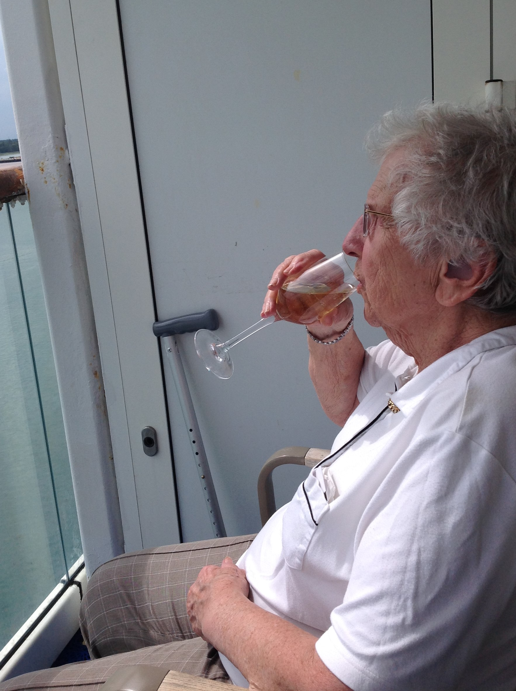

Norway Cruise 2017
Friday June 2nd 2017
Arrived at the Mayflower Cruise Terminal, to find the car handover was very efficient. As soon as I got
the cases out of the car, they were whisked away. I handed them the car keys, they handed me a QR code printed out by a handheld
device. When we walked into the terminal, Mum was offered wheelchair assistance through out the check-in process but declined, a
decision she came to regret.

We had to walk up a ramp, show our paperwork to a couple of ladies, who were handing out numbers which corresponded to a check-in
time people had to sit and wait for. As we were in a suite, we were taken straight to the front of a check-in queue. Had to fill in
a form to say we hadn't had a cold or D&V in the last two days, have our photographs taken digitally, and our passports checked. Mum
struggled with the digital photo taking. There was no-one with a camera so she wasn't having her photo taken.
We were then given our bar coded cruise cards, which were our suite door keys, payment cards on the ship, and passport replacements
when going ashore. Next was mag & bag security, and quite a long walk up and down ramps, and lifts until we were on board ship.
We decided to skip the free canapes and drinks and go straight to our Suite to recover from the journey both to and onto the ship.
It was a lovely sunny day, so once we had done our practice emergency muster with life jackets, we sat on the balcony in the sunshine,
drinking our free bottle of champagne and eating our free chocolates.
We were a little late doing the muster as some passengers were late on board, but eventually Aurora let go her lines, and the Captain
thrust the ship off her berth, and slowly came ahead using a combination of her bow thrusters, a stern thruster, two propellers and two
rudders. Under the guidance of a Southampton pilot, the Bridge team undertook the 24 nautical mile transit out through Southampton Water
And into the Solent.
We had first sitting in the Alexandria aft dining room, and found our table for the week. Ordered our Captain's collection wine
package, and surprised the wine waiter by not only finishing our bottle with the meal, but taking another bottle back to our
suite.
Upon reaching Nab Tower, the local Pilot disembarked, and shortly afterwards, full away on passage was rung, signalling the
start of the vessel's sea passage towards Stavanger, Norway.
{kind=link}
{kind=link}